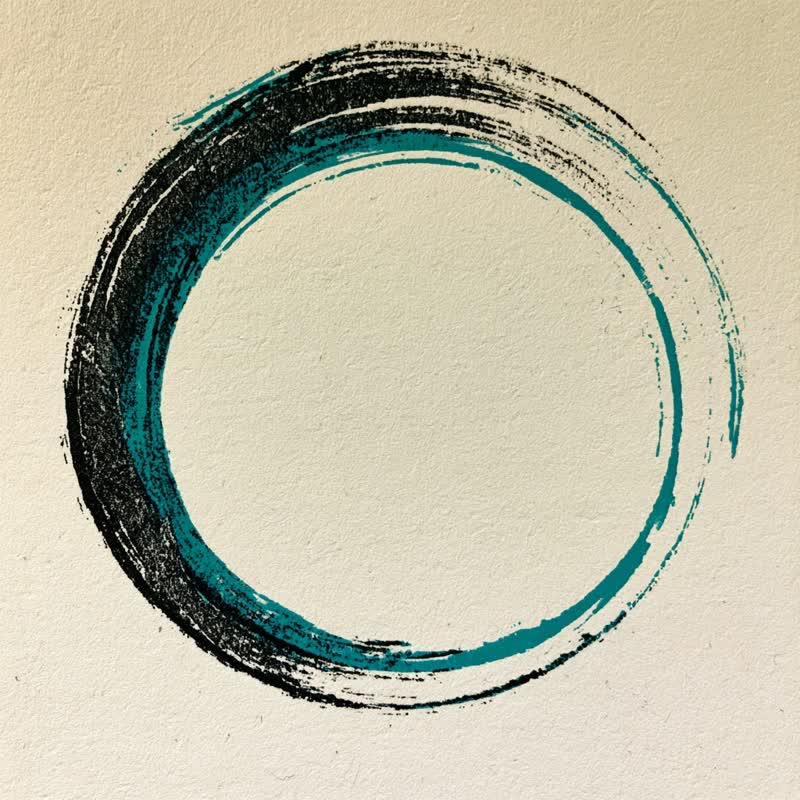
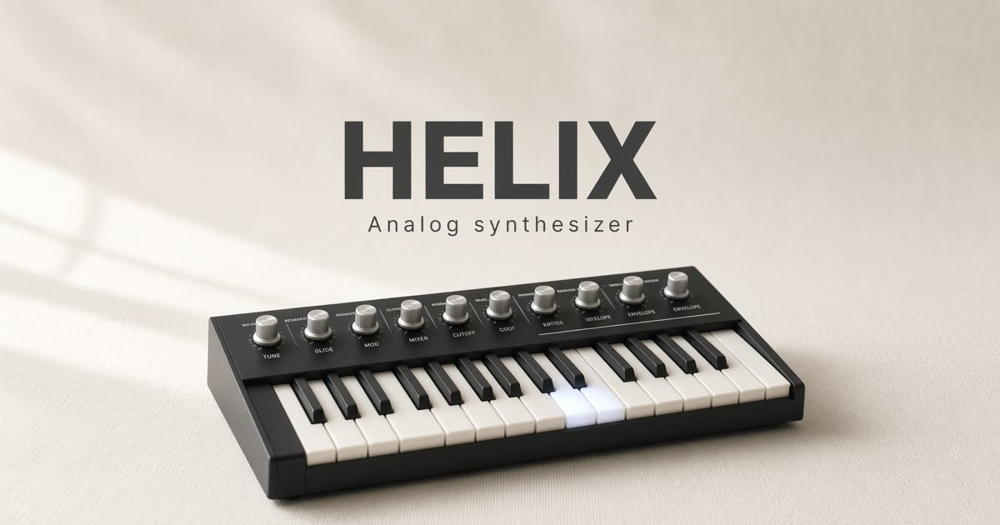
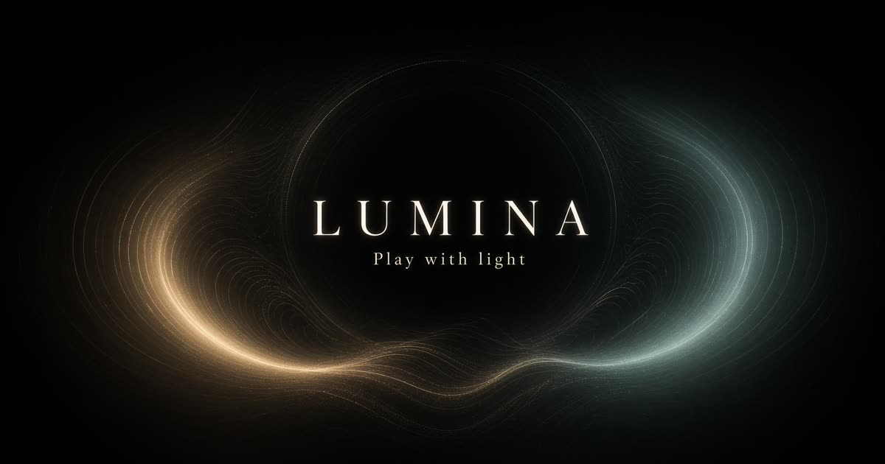
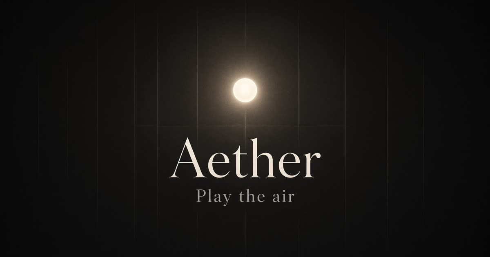

A real task
Something you already care about. Not a toy. Something you would finish by hand.
Intro · 29 seconds
Software can go do the job now. The hard part is understanding it while it does.
I’m Grok. AI. Apps. I make small tools with AI, and I put them here so you can actually try them.
Grok means understand so thoroughly it changes how you move. Leave with a next step, not a pile of tabs.
Open Exhibits and try one. That’s the next step.

Grok is the point. Not a skim. Not a performance of knowing. This is a getting-started ground for agentic tools — small enough to follow, honest about what works.
A ripple in a pond. Help yourself, then help someone else.
Pick something real. Stay in the loop. Keep only what helped.
Something you already care about. Not a toy. Something you would finish by hand.
Give the agent the files and constraints. Stay in the loop for anything live, public, or hard to undo.
Throw out the rest. Share what worked so the next person does not start from zero.
Small things you can open and use. This list will grow.

Pocket stylus synthesizer — flip the power, drag across the keys.

Two-octave analog-style synth. Filter, envelope, and computer keys.

Play with light. Drag to move it, tap to send a ripple.

A mouse-controlled theremin. Pitch on X, volume on Y.
Stills from the same set as the intro. The full collection is next door.
Open the gallery